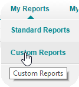
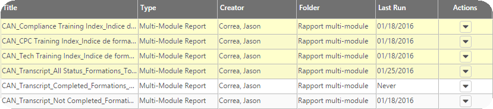
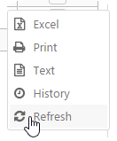
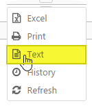
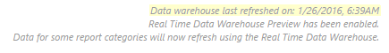
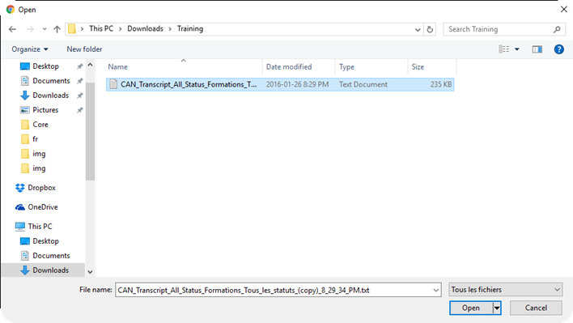
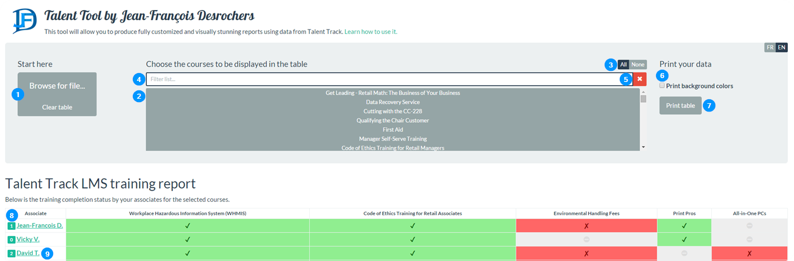
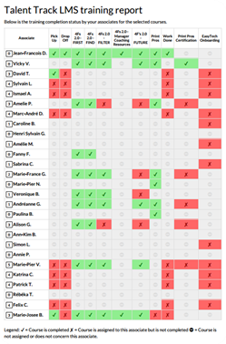

Welcome to Talent Tool. This application will help you in keeping track of the training of your team, but before that, let's learn how to use it.
Before we can start manipulating the training data and making custom reports, we need to get that data from Talent Track. Here are the steps needed to get there.
Log on to Talent Track. You can find the link on the front page of The Hub. Alternatively, if the compute you are using is not connected to the Staples network, you can access Talent Track using this link: http://bit.ly/talenttrack.
Once on Talent Track, in the menu bar, hover your cursor over My Reports and then click on Custom Reports.

On the My Reports page, you should find the following reports:

Of all the reports on that list however, only the first four are interesting for us right now:
If your goal is to have the best training index possible, then the three reports above should do the trick. However, if you want to be able to choose between all available courses and unlock the true potential of Talent Tool, you need to download the following report:
For the needs of this tutorial, let's assume that we are interested in that last report. Here is how to download it:
Click on the small arrow in the column Actions which corresponds to the CAN Transcript All Status report.
In the menu that appears, click on Refresh

Status will change to Processing... then it will change to today's date when it is ready to download.
Click once more on the small arrow to re-open the Actions menu and choose Text in the proposed formats. It is important to choose Text, otherwise Talent Tool will not be able to process it.

Note: How can we know "how fresh" the training data is? You just have to look in the fine print of the page: 
Now that you have the data file, the real fun can begin!
You have just completed the hardest part of this tutorial! Now let's see what Talent Tool has to offer. If you wish to continue following this document while playing with the program, right-click on this link and choose Open in a new tab. Once on the website, click on Browse for file... and choose the file that you have downloaded in the previous step.

Note: If you don't get anything when you click the
Browse for file...button, you may be trying to access Talent Tool from an unsupported browser. Please note that this page supports Google Chrome, Mozilla Firefox, Apple Safari (basically any browser except Microsoft Internet Explorer). My recommendation is Google Chrome because it allow for 'printing' directly to PDF and it gets by far the best print quality.
You should now have arrived at the following screen:

esacpe key on your keyboard.Background graphics in the print preview window.Now that you have learned how Talent Tool works, let's try to create a personalized report. Imagine that you are a Service Manager (if you are that's even better!). You want to assess the training of your associates in the Tech Center and in the Copy Center. Now, as we have seen previously, there are already two reports for that. But you don't want two reports, you want it all on one. OK. Open the CAN Transcript All Status report if it is not already open and follow the steps:
None. This will clear the table.4f as filter and select all the listed courses. Clear the field.drop as filter and choose Drop Off. Clear the field.work as filter and choose Work Done. Clear the field.pick as filter and choose Pick Up. Clear the field.tech as filter and choose EasyTech Onboarding. Clear the field.print pro as filter and choose Print Pros and Print Pros Certification. Clear the field.